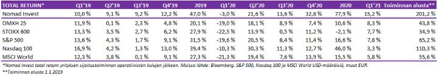
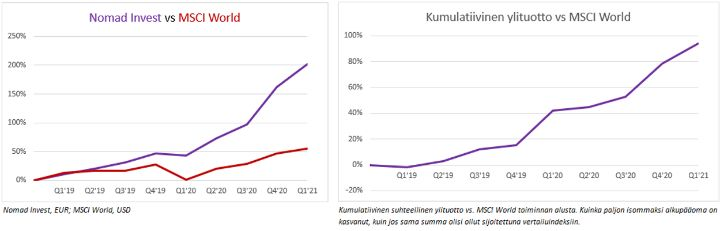
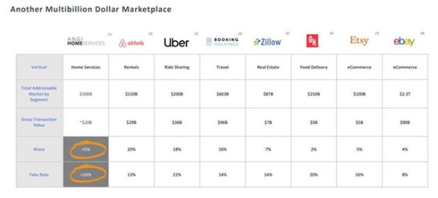

Ensimmäisen neljänneksen jälkiviisastelut
Sijoittamisessa tulee aikoja, jolloin ideoita ja tilaisuuksia riittää ja kaikki tuntuu helpolta. Nykyinen tilanne tuntuu vastakohdalta — ilmeiset ideat ja alihinnoittelut ovat vähissä. Sen takia katsauskin on tavanomaista lyhyempi.
Ensimmäisen neljänneksen sijoitustuotot ja markkinatunnelmat
Alkuvuosi tuotti hyvän perustuoton 15,2 %. Vertailuna OMXH25 tuotti 8,3 % ja MSCI World tuotti 5,8 %. Kaikkien aikojen parhaan neljänneksemme jälkeen olisi pitänyt vain uskoa, että positiot voivat jatkaa edelleen oikeaan suuntaan. Varmistelu johti melko tylsään neljännestulokseen.


Markkinoiden tunnelma vaihtui hieman yli vuoden takaisesta pelosta suoraan juhlatunnelmiin ennätysvauhdissa. Mikään ei saa sijoittajia yhtä innostuneiksi osakkeiden ostamisesta kuin nopeasti nousevat hinnat. Jos tällaisessa tilanteessa on vähän varovainen, jää osa tuotoista saamatta. Absoluuttisesti houkuttelevien sijoitusten löytäminen on poikkeuksellisen vaikeaa. Hyvät yhtiöt ovat ennätyksellisen kalliita ja keskinkertaiset yhtiötkään eivät enää ole alennuksessa.
Jos keskuspankit pitävät reaalikorot pari prosenttia miinuksella, ei suuren osakekuplan muodostuminen olisi kovin yllättävää. Toisaalta mitä korkeammalle arvostustasot kohoavat, sitä suurempi liike alaspäin on, jos joko koroista tai taloudesta tulee pettymyksiä.
Näyttäisi kuitenkin siltä, ettemme ole vielä manian laajamittaisuudessa vuosituhannen vaihteen teknokuplan tasolla. Markkinat ovat kuumat, mutta järjettömyydet ovat vielä sivuosassa. Niistä saa hyvää viihdettä, mutta ne eivät aja koko markkinaa.
Markkinoiden johtajina pidettyjen Amazonin, Microsoftin, Applen, Googlen ja Facebookin kuluvan vuoden ennustettu vapaan kassavirran tuotto on keskimäärin 3 %. Jos korot pysyvät nollissa, kuinka suursijoittajat perustelevat, että osakkeet pitäisi myydä? Edes Joe Bidenin esittämä yrityksiin kohdistuva veronkorotus ei saanut sijoittajia pelästymään.
Kaikki on siis kiinni koroista. Jos korot normalisoituvat monta prosenttia korkeammalle, osakkeiden kurssitasot eivät välttämättä ole kestävällä tasolla. Etenkin reaalikorkojen nousu olisi myrkkyä.
Keskuspankeilla on tässä merkittävä rooli. Toistaiseksi ne terästävät boolia vielä määrällisellä elvyttämisellä, vaikka vaaran merkit alkavat jo näkyä. Historia tulee katsomaan tätä riskiä joko rohkeana onnistumisena tai emämunauksena.
Inflaatiolla on keskeinen osa siinä, miten keskuspankit jatkossa reagoivat. Jos inflaatio jatkaa kuluvan vuoden nousupiikin jälkeen alle keskuspankkien tavoitteiden, korot pysynevät alhaisina.
Jos inflaatio lähtee kiihtymään, keskuspankit joutuvat nostamaan korkoja, ja vastahakoisesti rohkeista sijoittajista tulee ennen pitkää pelokkaita myyjiä.
Voimme arvailla mitä osakkeille, inflaatiolle ja koroille käy, mutta todellisuudessa kukaan ei tiedä.
Vastahakoisesti rohkea sijoittaminen voi edelleen olla se oikea, mutta riskit lisääntyvät kurssien noustessa.
Hyvin menneitä liikkeitä:
- Reflaatiotreidi toimi hyvin. Long öljyfutuurit, kaivosteollisuus, pankit ja arvo-osakkeet tuotti alkuvuonna hyvin jo erinomaisten loppuvuoden tuottojen päälle. Short valtionvelkakirjat auttoi sekin. Vaikka luovuimme suurimmasta osasta öljyfutuureista liian aikaisin, oli treidi alkuvuoden tuottoisin.
- Adapteo oli suurin yksittäinen osakesijoituksemme ja se nousi 46% puolessa vuodessa (Q1 23%). Osake oli melko perinteinen arvosijoitus, jossa halvalle hinnalle oli hyvä peruste — listaaminen Tukholman pörssiin, vaikka suuri osa omistajista oli suomalaisia sekä koronan iskeminen jo muutenkin heikkoon sykliin. Yhtiö on Ruotsissa vähän tunnettu ja väärinymmärretty, ja suomalaisille ostaminen on tehty vaikeaksi (Helsinkiin listaus lähikuukausina). Olemme myyneet noin puolet osakkeistamme. Osake on edelleen vertailuyhtiöihin ja toteutuneisiin yrityskauppoihin nähden edullinen, mutta suurimman alennuksen poistuttua olemme olleet myyntipuolella.
- Nokian shorttaaminen pystysuoraan nousuun osoittautui oikeaksi liikkeeksi. Osakkeen panos alkuvuoden tuotoista oli lähes 2 %. Oli hämmästyttävää, että Nokian osake yli tuplasi viikossa jenkkipörssissä. Moni muu rakettinousijoista oli pienempiä ja enemmän lyhyeksimyytyjä yhtiöitä, joissa ns. short squeeze toimi nousun polttoaineena. Oli myös jossain määrin yllättävää, kuinka laiskasti institutionaaliset sijoittajat reagoivat täysin perusteettomaan hinnan nousuun.
Pieleen menneitä asioita:
- Suojaamme salkkua usein myymällä lyhyeksi osakkeita. Viime vuoden lopulla se toimi täydellisesti. Osakeomistukset tuottivat ja suojat tuottivat. Tuloksena oli 33 % tuotto yhdessä neljänneksessä. Ensimmäisellä neljänneksellä meihin iski yksi kaikkien aikojen suurimmista short squeezeista. Wallstreetbets ja Gamestop olivat tämän liikehdinnän alkusyy. Käytännössä jokainen osake, jossa oli paljon lyhyeksimyyjien kiinnostusta, räjähti ylös.
Päädyimme sulkemaan valtaosan lyhyistä positioista. Ostimme siis osakkeita, jotka ovat joko karkean yliarvostettuja tai suoranaisia huijauksia. Se saattaa kuulostaa idioottimaiselta. Mutta olemme syklin vaiheessa (tai ainakin siltä tuntui tammikuussa), jossa 10 kertaa yliarvostettu osake ei ole enää juuri tyhmempää kuin 3 kertaa yliarvostettu. 1990-luvun lopulta on lukemattomia tragedioita, jossa lyhyeksimyyjät jäivät jyrän alle, vaikka olivat lopulta oikeassa. Jälkikäteen positioiden sulkeminen ei ollut kannattavaa. Monet shorttisalkun osakkeista olisivat puolittuneet melko lyhyessä ajassa. Esimerkiksi GSX kolminkertaistui tammikuussa lähes 150 dollariin vuoden alusta. Taustalla oli Bill Hwangin velkavivutettu squeeze, joka toki muiden vastaavien kanssa päätyi huonosti ja mies hävisi yli 10 miljardin dollarin omaisuutensa viikossa. Nyt osake on laskenut yli 80 %.
Pelasimme puolustuspeliä ja otimme hetkellisesti neljän prosentin tappiot koko pääomalle. Jos emme olisi ottaneet, olisi tappio ollut tuplasti isompi vähän myöhemmin. Toki se olisi nopeasti kääntynyt myös voitoksi — kaikki on helppoa jälkikäteen.
Joskus on tärkeämpää saada kirkas mieli kuin tehdä objektiivisesti järkevin asia.
Mitä meidän pitää tehdä paremmin:
- Isoja ideoita ja parempaa tutkimusta.
Palkkasimme Nomadiin toukokuusta alkaen analyytikon ja treiderin. Kun seurantakohteita on turhan paljon, on moni ainakin jälkikäteen ilmeinen hyvä paikka jäänyt käyttämättä tai panos on ollut liian pieni. Jos kunnon tutkimus jää tekemättä, jää positio helposti pariin prosenttiin salkusta. Kuitenkin markkinoiden voittaminen on niin vaikeaa, että todella hyvällä hajautuksella tulos jää aina vähän laimeaksi. Sen takia pitäisi jatkossa pystyä ottamaan paljon enemmän 5-10 % kokoisia sijoituksia salkkuun.
Uusia sijoituksia ja ideoita
Vauhdikas kurssiralli marraskuun alusta on saanut omistusten tavoitehinnat täyttymään. Hyviä yhtiöitä on mennyt myyntiin, koska osakkeet ovat nousseet nopeasti kymmeniä prosentteja. Alla jotain tuoreita ajatuksia, jossa yritetään katsoa vuosien päähän, eikä niinkään miettiä seuraavien kuukausien kurssikehitystä. Kurssilasku voisi olla jopa hyvä asia, jotta saisi kasvatettua omistuksiaan.
Alibaba
Ostimme yhtiötä, kun kaikki tuntui menevän pieleen. Jack Ma ei sentään ollut sementtikengissä merenpohjassa, vaan Hainanissa golffaamassa. Ant listautuminen kariutui ja regulaatiokenttää suhteessa perinteisiin kilpailijoihin tasoitettiin. Miljardiasakot maksettiin. Nyt pahojen uutisten pitäisi olla ulkona. Niiden jälkeen tulosnäkymät ovat edelleen valoisat ja Länsimaisiin teknojätteihin nähden arvostus halpa ja kasvunäkymät paremmat — etenkin jos Kiinan keskiluokka päästetään vaurastumaan.
Poliittinen riski laatuyhtiöissä on usein oston paikka. Toki Kiinan hallitus voi murskata Alibaban kuin kärpäsen, mutta on vaikea nähdä miten hyödyt ylittäisivät haitat. On paljon todennäköisempää, että Jack Ma ja yhtiö palaavat ruotuun ja yhtiön toiminta jatkuu menestyksekkäänä.
Toki kiinalaisiin yhtiöihin sijoittamisessa on aina omat ongelmansa. On kuitenkin aika suuri päätös olla kokonaan sijoittamatta maailman toiseksi suurimpaan talousmahtiin ja siihen ainoaan nopeasti kasvavaan. Vaikka kiinalaisyhtiössä voi olla ongelmia, ratkovat ne myös paljon keskiluokan ongelmia ja tarjoavat työpaikkoja.
Yhtiö on kasvuun nähden halpa. Kassa huomioiden yhtiön P/E on alkaneelta tilikaudelta alle 20, ja kasvuvauhti 30 %. Vaikka kasvu hidastuu, on vaikea tehdä laskelmaa, missä yhtiö ei näyttäisi edulliselta. Marketplace liiketoimintamalli on osoittautunut ympäri maailman todella hyväksi omistajilleen. Kasvua pystytään tekemään huikealla pääoman tuotolla, jolloin valtaosa kasvun hedelmistä siirtyy suoraan yrityksen pankkitilille. Charlie Mungerkin oli ensimmäisellä neljänneksellä Alibabassa ostoksilla.
Angi Homeservices
Angi toimii markkinapaikkana kotipalveluille. Jos tarvitset remppa- tai putkimiehen, täältä löytyy. Suurin osa liikevaihdosta tulee Yhdysvalloista, mutta Euroopassakin yhtiöllä on vahva jalansija. Yhdysvalloissa brändejä on useampi: HomeAdvisor, Angi, Handy ja FiXd. Yhtiön suurin omistaja on IAC. Emoyhtiö on ollut mukana kasvattamassa sellaisia brändejä kuin Tinder ja Vimeo.
Yhtiö ei näytä kovin hyvältä sijoitukselta pintapuolisesti. Yhtiö kasvaa tänä vuonna vain 15 % ja tulos on vielä tasoa nolla — vapaa kassavirta toki varsin positiivinen. Yhtiöstä joutuu maksamaan lähes viisi kertaa liikevaihdon verran, joten yhtiö ei ole varmasti perinteisen arvosijoittajan makuun.
Markkinapaikat eivät ole lyöneet isosti läpi tällä alalla oikein missään. Ongelma on, että riittävän määrän palveluntarjoajia ja ostajia saaminen palveluihin maksaa todella paljon, ja sitten näitä palveluita käytetään harvakseltaan. Sen takia apupalveluissa yksisarviset ovat olleet harvassa.
Toisaalta asian voi kääntää toisin päin. Jos joku taho onnistuu luomaan markkinapaikan kotipalveluille, on vallihauta palvelun ympärillä aivan erilainen kuin ruokakuljetuksissa ja taksipalveluissa. Mutta markkinan koko (TAM) ei sen pienempi. Ellei satu tuntemaan jotain remppamiestä, monelle kuluttajalle on työlästä ja riskialtista palkata tuntematon työntekijä. Angi yrittää tuoda palveluihinsa kiinteää hinnoittelua, jolloin palvelu määrittää työn hinnan. Tässä on omat riskinsä, mutta ainakin omalla kohdalla palvelun ostaminen kiinteään hintaan olisi houkuttelevin vaihtoehto.

Yhtiön markkina-arvo on 8 miljardia dollaria ja se on ylivoimainen markkinajohtaja. Uskomme ihmisten vaurastuessa miettivän entistä enemmän oman aikansa arvoa. Milleniaaleilla ei pysy vasara enää niin hyvin käsissä kuin suurilla ikäpolvilla, eikä haluja pihatöihin ja kunnostushommiin ole välttämättä samassa määrin. Jos Angi ei tyri, sen liikevaihto voi vielä kymmenkertaistua nykyisestä — yhtiö voi kasvattaa merkittävästi omaa osuuttaan välitetyistä palveluista, ottaa markkinaosuutta pirstaloituneelta alalta ja nauttia toimialan kokonaiskasvusta.
Toki hinta voisi olla halvempikin. Bisnes on vaikea, mutta ongelmien selättäjille palkinnot voivat olla todella suuret. Angi Homeservices on mielestämme parhaassa asemassa saadakseen hinnoittelun oikein ja loppuasiakkaan tyytyväiseksi. Suurimmalla on eniten dataa ja tämäkin markkinapaikka luultavasti tulee keskittymään muutamalle voittajalle. Muihin markkinapaikkoihin nähden yhtiö on vielä edullinen verrattuna potentiaaliin.
Aker Clean Hydrogen
Ilmastonmuutosta vastaan taistelevat yhtiöt ovat hinnoiteltu yleisesti niin, ettemme olisi järkyttyneitä, jos moni osake puolittuisi, jos sijoittajien kärsivällisyyttä koetellaan lähivuosina. Toisaalta uusiutuva sähköntuotanto, hiilidioksiidin kaappaus ja vety ovat sektoreita, joissa kasvu riittää 30 vuotta eteenpäin.
Kirjoitimme puoli vuotta sitten samasta aiheesta. Vuodenvaihteen ympärillä kaikki puhtaan energian yhtiöt nousivat melko railakkaasti. Mutta viimeisinä kuukausina monesta on puhkaistu ilmoja pois ja olemme taas lisänneet yhtiöitä salkkuumme. Esimerkkinä Aker Clean Hydrogen. Uskomme, että laitepuolelle tulee olemaan todella veristä kilpailua, ja voittajan löytäminen sieltä voi olla haastavaa, vaikka markkina kasvaisi todella suureksi. Sen takia olemme tässä vaiheessa panostaneet enemmän ACH:n, joka rakentaa vetylaitoksia. Liikevaihto on vielä nolla, mutta hankkeita varmasti riittää vuosi vuodelta enemmän.
Aurinko- ja tuulivoimassa suurimpia voittajia ovat olleet laitevalmistajien sijaan voimaloita rakentavat tahot. Kiinalaiset yhtiöt tulevat painavaan volyymibisneksen katteet varmaan vedyssäkin alas, mutta tämä hyödyttää laitosten rakennuttajia. On toki hyvä kysymys, mihin kaikkeen vetyä kannattaa edes käyttää. Mutta Euroopan Unioni ja monet valtiot tuntuvat valinneensa vedyn suureksi voittajaksi tukien suhteen, joten kasvu näyttää melko varmalta. Aker-konsernilla on kokemusta monimutkaisista projekteista ja taloudellisia resursseja tukea omistusyhtiöitään. Vedyssä voi tulla alkuinnostuksen jälkeinen jääkausi pörssikursseihin, mutta näkisimme tämän oston paikkana.
Koska liikevaihto on vielä nolla, ei alle kymmenenkään NOK:n hinnalla voida puhua mistään turvamarginaalista. Riskejä kuitenkin vähentää jossain määrin se, että melkein puolet yhtiön markkina-arvosta on käteistä. Jos alaan iskee kuitenkin vielä hype, pääsee mukaan siis hieman pienemmälläkin riskillä.
Mikä on seuraava odottamaton kehitys markkinoilla?
Jos pari vuosikymmentä sitten olisi kertonut, että valtaosa länsimaiden 10-vuotisista velkakirjoista tuottaa negatiivista korkoa, sinut olisi naurettu ulos huoneesta.
Jos edes viisi vuotta sitten olisi kertonut, että valtiot voivat huoletta ottaa niin paljon lainaa kuin ne ovat viimeisen vuoden aikana ottaneet, sinut olisi naurettu huoneesta. Varsinkaan ilman korkojen tai inflaation kiihtymistä.
Jos viime vuonna maaliskuun puolivälissä olisi tappavana pandemian pysäyttäessä maailmantalouden lohkaissut, että osakekurssit ovat ympäri maailman kirkkaasti huippukursseissaan vuoden päästä, vaikka tartuntamäärät ovat huipussaan — arvaat varmasti loput.
Nämä eivät ole asioita, joiden ajateltiin olevan mahdollisia.
Koko ajan tapahtuu asioita, joita juuri kukaan ei ennustanut. Vaikka sijoittamisessa täytyy ottaa vahvoja näkemyksiä, niihin ei auta takertua. ”Strong Opinions, weakly held.”
Nykymaailma on poikkeuksellisen antoisa vahvistusharhalle. Ihminen etsii mielellään omaa näkemystään vahvistavaa tietoa. Ja kun dataa on loputtomasti, löytää aina lähes loputtomasti omaa näkemystä tukevaa tietoa.
On paljon merkkejä, jotka näyttävät, että olemme nousumarkkinan loppuvaiheessa. Hurjat tuotot viimeisen 12 kuukauden aikana, yleisen kiinnostuksen nousu sijoittamiseen, velkavivun käyttö ja kuumat listautumisannit. Optimismia riittää.
Sitten toisaalta, korot ovat vielä nollassa, keskuspankit tukena ja talouden noususykli vasta alkamassa. Ja monet ovat vielä vähän varuillaan osakkeiden ollessa absoluuttisesti tavanomaista kalliimpia.
Nämä kaksi edellistä kappaletta ovat ristiriidassa. Ikinä ennen ei ole ollut juuri tällaista tilannetta. Markkinan suunnan arvaaminen on tavallisestikin vaikeaa ja ajoittaminen yleensä tuurikauppaa. Nyt suunnan arvioiminen tuntuu lähes mahdottomalta tehtävältä.
On siis hyviä argumentteja sen puolesta, että osakkeet voivat nousta paljon, ja ajautua jonkinlaiseen kuplaan.
On myös hyviä argumentteja, että osakkeet ovat kalliita ja markkina ylikuumentunut.
Kun sijoittamisessa ei tiedä mitä tehdä, voi tehdä kompromissin. Olla jopa vähän mukana kuumissa sektoreissa ja pitää melko tavanomaisen osakepainon, ja odottaa selvempää paikkaa ottaa näkemystä.
Marraskuun alussa ostimme osakkeita reilusti ja olimme optimisteja. Nyt olemme vähän varovaisempia, mutta musiikin soidessa, pitää jatkaa tanssimista.
Osakkeet ovat nousseet vahvasti ja optimismi on niin korkealla, ettei juuri tule valoisampaa hetkeä mieleen 20 vuoteen. Aivan viime päivinä (20.4 kirjoitettu) olemme myyneet entisestään osakkeita ja ostaneet suojauksia, osakepainon painuessa pitkästä aikaa alle 25 %:n. Mutta jos tämä osoittautuu vääräksi liikkeeksi, ei näkemykseen auta jumiutua.